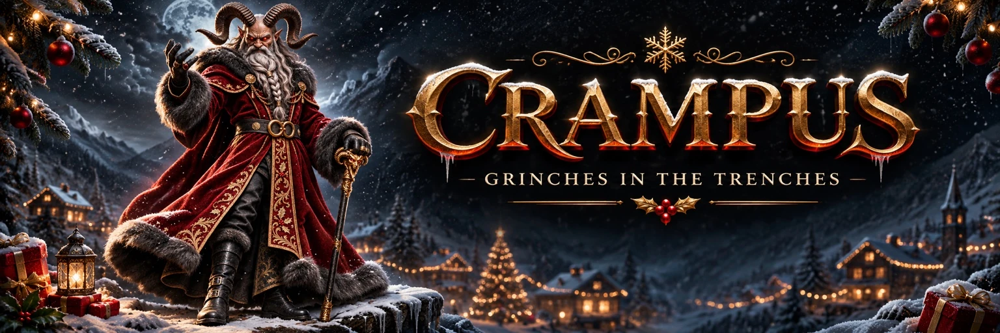

NO NICE LIST
The holiday belongs to the troublemakers, the misfits, and the last-minute gift shoppers.

WINTER 2026 // UNAUTHORIZED HOLIDAY TAKEOVER
He's survived centuries of folklore. Now he's got Wi-Fi, bad intentions, and access to the North Pole group chat. Santa's HR department is in shambles.
EST. BEFORE YOUR ANCESTORS STILL NOT ON THE NICE LIST

SANTA WAS UNAVAILABLE FOR COMMENT.
They wrote Christmas stories for the nice kids. This one's for everybody who grew up on the wrong side of the North Pole.
Out in the cold, somewhere past the last stop on Santa's route, somebody got tired of waiting for a miracle.
CRAMPUS didn't come for cookies. He came to hijack the holiday, flip the script, and remind the world that even the villains deserve a season.
THE MISSION: MAKE CHRISTMAS MISCHIEVOUS AGAIN.The holiday belongs to the troublemakers, the misfits, and the last-minute gift shoppers.
Make a post. Drop a punchline. Let the internet know who's running December.
Dark Christmas trap, icy bells, loud 808s. The soundtrack to a very bad season.
One mischievous character. A whole community of people who get the joke.
One button. Endless Christmas disrespect. Generate a post, copy it, and go terrorize the timeline.
The workshop is open. No elves were consulted.
Santa checks his list twice. I check the trenches every five minutes. We are NOT the same. 🎄👹 #CRAMPUS
Original CRAMPUS artwork archive. The gallery is ready for the preserved 2025 assets.


Keep the memes moving and the season alive. Join the original community channels.
A fictional Christmas villain and the face of Grinches in the Trenches — part lore, part music, and pure holiday mischief.
No. The generator works entirely in your browser. Generate, copy, and share without an account or database.
We're recovering the original 2025 media archive. New gallery slots are already prepared for the artwork, banners, and icons.
No. This is the official entertainment and community hub. There is no wallet connection, token sale, or financial transaction on this website.